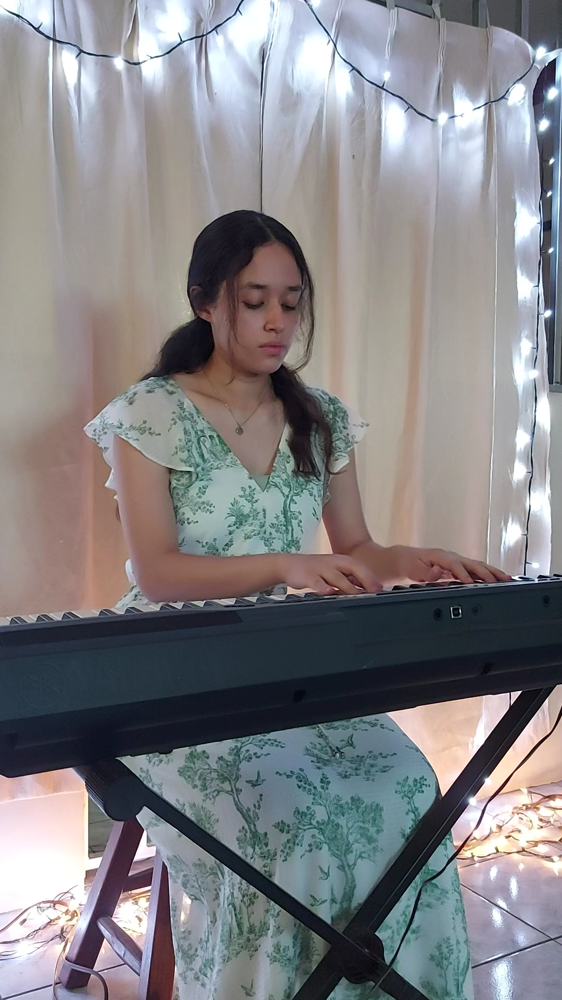
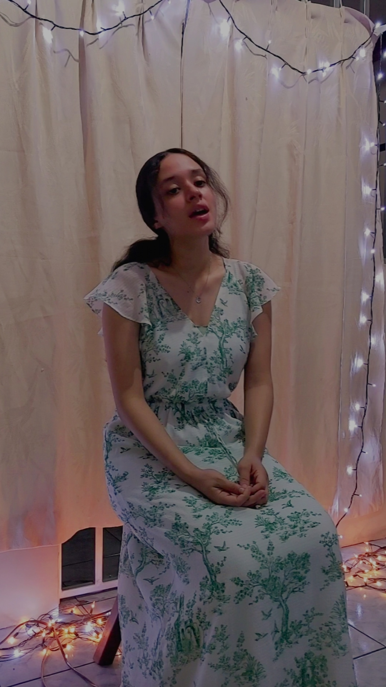

Moving on to the second section of my hobbies, I will talk now about music and what process I've gone through with it
I've always had the dream to play the piano, but I've never been so good at it. I still attempted to take piano lessons. For maybe two years I took piano lessons, and couldn't make much really. I just couldn't understand music completely. So although now I am able to play some short songs, I know I will never become the piano player I once viewed myself. Here's some pictures of me playing and practicing.
Singing has always been part of me. My mom has told me that I started singing when I was 4 years old. I've always liked doing it, and enjoy it very much. In my family many people has this singing talent, and it's been really heartwarming to get to know about this. It makes me feel that is something that is in our blood, so I'd truly want this to last and be in future generations. Here is a photo of me singing for an exam I presented.
